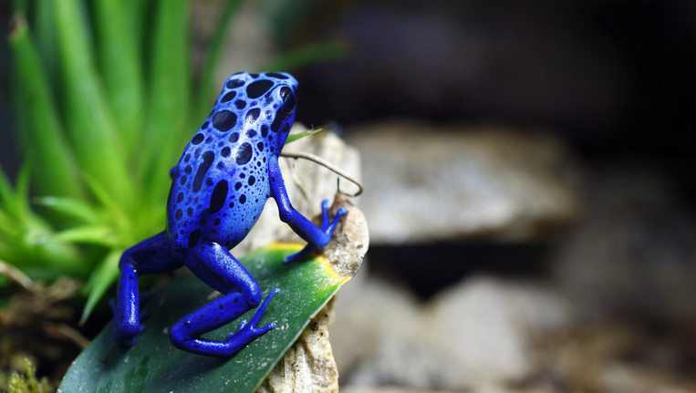
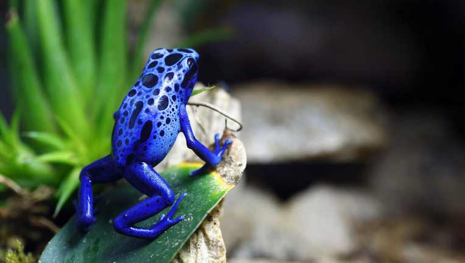

Website Portfolio Monique Arlaud
Ik ben Monique Arlaud en doe verschillende soorten vrijwilligers werk: Huiswerkbegeleiding voor kinderen die verstandelijk beperkt zijn, tuinieren met ouderen en kinderen met een leesachterstand helpen hun leesvaardigheden te verbeteren. Naast vrijwilligerswerk heb ik ook mijn hobby's: fotograferen, decoreren op partijen en salsa dansen.Ik heb een hekel aan monopoly, omdat het zo lang duurt. kaartspelletjes daarentegen vind ik ontzettend leuk. Als de zon maar even schijnt kun je er van uit gaan dat ik sta te barbecuen. Weet je wat skip de zon, ik BBQ zelfs als 't sneeuwt.
 
